08:30
Morning Pumpkin Carving
“You sat indoors at a large wooden table near a window with a view of trees and buildings. You held a small yellow pumpkin.”
seen in photos: knife1 frame from 1 file
The photos show: knife. The diary leaves this out; you decide whether it matters.
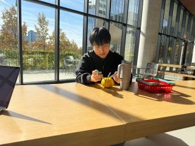
“You sat indoors at a large wooden table near a window with a view of trees and buildings. You held a small yellow pumpkin.”
Nobody is in these photos, so there is nothing to tell you about.
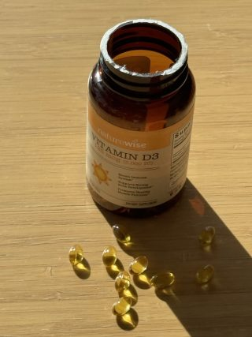
“You and the caregiver folded a jacket together.”
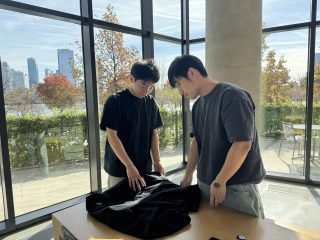
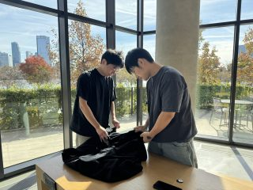
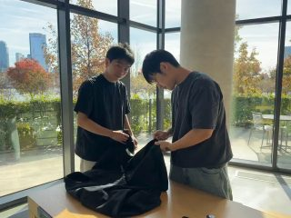
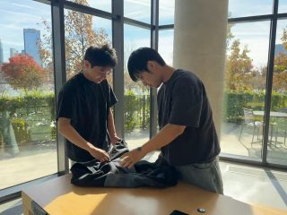
+1“You sat on a blue couch in an indoor room with large windows, bookshelves, and a green rug. You drew on a magnetic drawing board.”
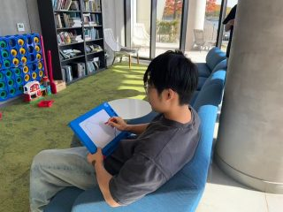
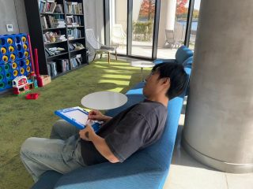
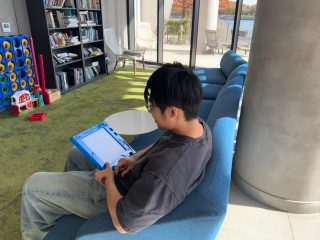
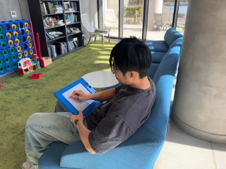
+1“You sat in a white patterned chair near a window and a bookshelf. You held and read an open book.”
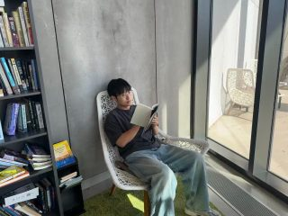
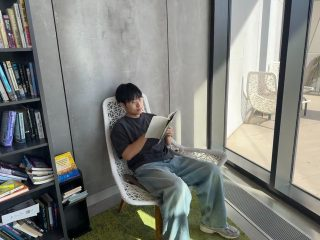
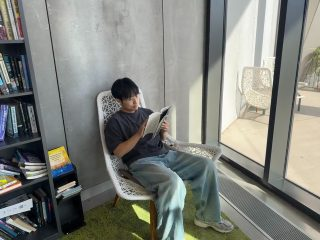
“You walked near a staircase in a modern lobby. You also stood near a table with a laptop and a tumbler with a straw, looking out at large windows with a view of trees and buildings.”
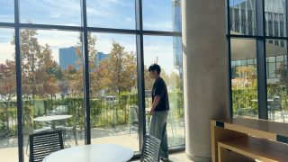
+8“You stood indoors near large glass windows and doors overlooking a city and water view. You stood near a doorway while holding a red bag.”
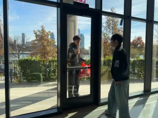
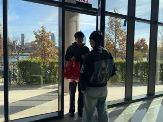
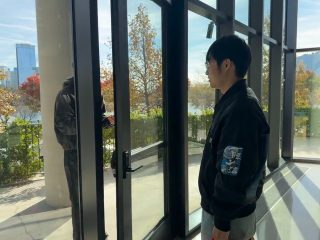
“Your visitor was your grandson Leo; you played with a toy farm together.”
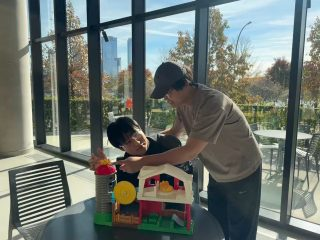
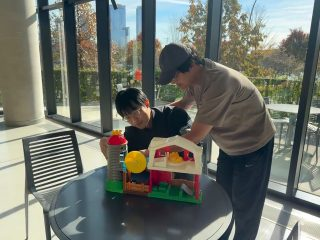
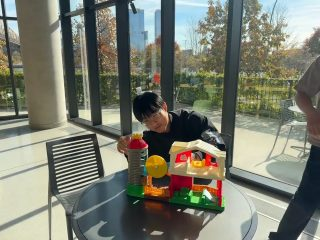
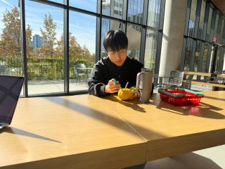
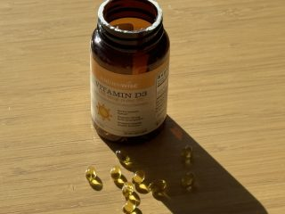
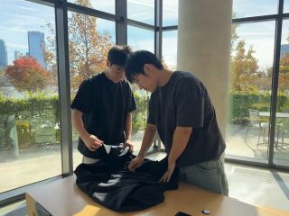
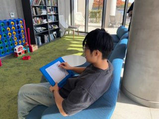
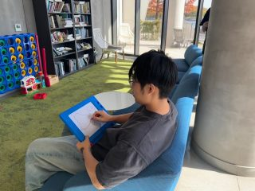
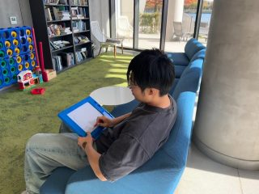
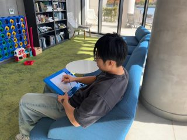
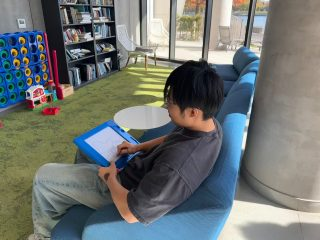
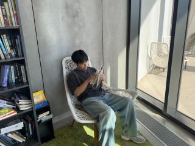
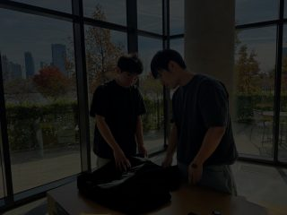